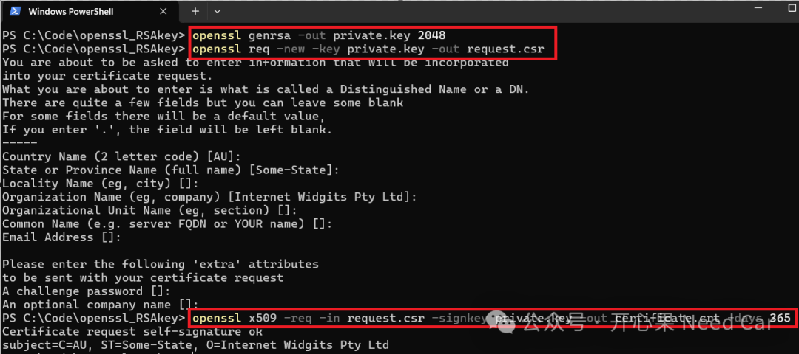
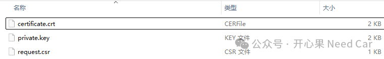
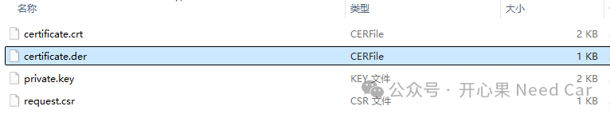
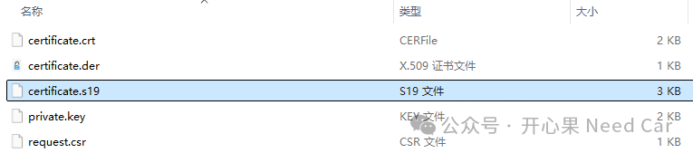
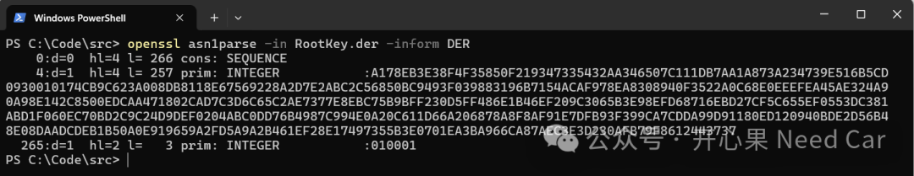
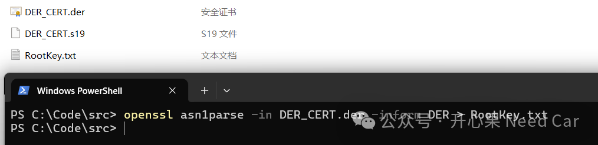
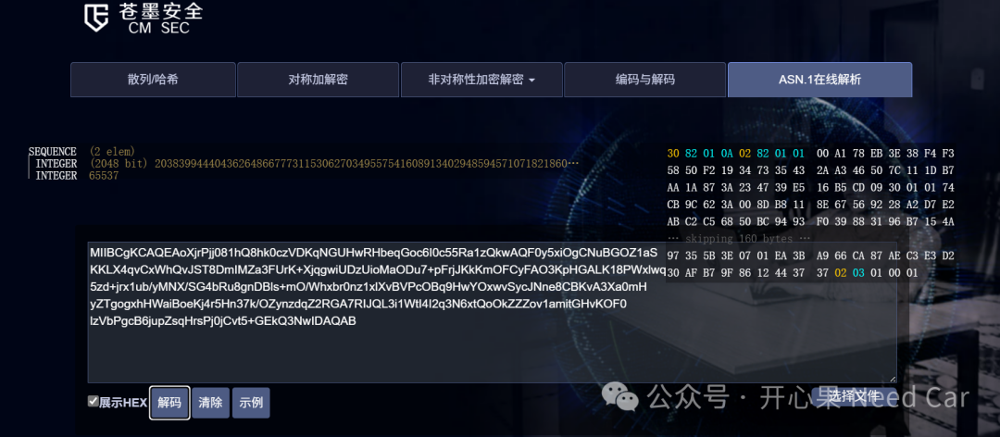
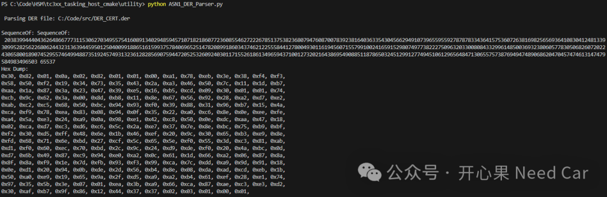

开心果 Need Car · 2026-08-26T06:21:00+08:00 · 微信原文
1、公钥存储的文件格式
2、如何解析公钥
PEM（Privacy Enhanced Mail）格式（Base64编码的 ASCII 文本）。
openssl rsa -pubin -in publickey.pem -text -nooutX.509 证书（如 .crt 文件），可以是PEM（文本）或DER（二进制）格式。
openssl x509 -in certificate.crt -text -noout可以使用 -inform DER/PEM参数来确认使用的是DER还是PEM格式：
openssl x509 -in certificate.crt -inform DER -text -nooutopenssl x509 -in certificate.crt -inform PEM -text -noout
DER（Distinguished Encoding Rules）格式（如 .der 文件），二进制编码（ASN.1 DER 编码）。
openssl x509 -in certificate.der -inform der -text -noout三种格式对比如下：
3、使用OpenSSL工具来生成一个 X.509 格式的证书（.crt 文件）
通常包括以下几个步骤：
步骤 1：生成私钥
openssl genrsa -out private.key 2048步骤 2：生成证书签名请求（CSR）
openssl req -new -key private.key -out request.csr会被提示输入一些信息，例如：国家（Country Name）、省份（State or Province）、城市（Locality）、组织（Organization Name）、通用名称（Common Name，例如域名）、邮箱地址。也可以直接回车。
步骤 3：使用 CSR 自签名生成 X.509 证书（.crt）
openssl x509 -req -in request.csr -signkey private.key -out certificate.crt -days 365这会生成一个有效期为 365 天的自签名证书 certificate.crt。
如上流程执行示意如下：

最终会得到三个文件：
得到的文件如下所示：

可以生成用于嵌入式的DER格式自签名证书；
openssl x509 -req -in request.csr -signkey private.key -outform DER -out certificate.der -days 365X.509 证书规范本身就是基于ASN.1（Abstract Syntax Notation One）定义的结构。-outform DER 表示输出为 DER（Distinguished Encoding Rules）格式，它是 ASN.1 的一种二进制编码方式。所以，生成的 certificate.der 文件是一个ASN.1编码的X.509证书，符合 RFC 5280的结构规范。
生成的certificate.der证书，示意如下：

可以使用如下命令解析certificate.der证书：
openssl x509 -in certificate.der -inform DER -text -noout4、X509证书中的签名和验签过程
（一）签名的内容
X.509 签名的内容包括：证书版本号、序列号、签名算法标识符（用于签名的算法，如 SHA256 with RSA）、颁发者信息（Issuer）、有效期（Not Before / Not After）、主题信息（Subject）、公钥信息（Subject Public Key Info）、扩展字段（如 Key Usage、Subject Alternative Name 等）、可选的唯一标识符（Issuer/Subject Unique ID）
这些内容构成了证书的 TBS（To Be Signed）部分。
（二）签名过程简述
证书颁发机构（CA，Certificate Authority）将上述 TBS 内容进行哈希处理（如 SHA-256）。
使用 CA 的私钥对哈希值进行加密，生成签名。
签名附加在证书末尾，形成完整的 X.509 证书。
（三）验证签名时
使用 CA 的公钥解密签名，得到原始哈希值。
对 TBS 部分重新计算哈希值。
比较两个哈希值是否一致，以验证证书是否被篡改。
5、使用SREC_CAT将*.der证书转换成*.s19文件
嵌入式工程中，传输给ECU的是二进制文件（eg：*.s19、*.hex、*.bin等），如何将*.der证书转换成*.s19文件？使用SREC_CAT.exe转换命令如下：
srec_cat certificate.der -binary -offset 0x0000 -o certificate.s19 -motorola参数说明：
certificate.der：输入文件（DER 格式）
-binary：指定输入格式为二进制
-offset 0x0000：从地址 0 开始写入（可根据需要修改）
-o certificate.s19：输出文件名
-motorola：指定输出格式为 Motorola S-record（即 S19）
输出文件，如下所示：

https://sourceforge.net/projects/srecord/files/srecord-win32/1.65/srecord-1.65.0-win64.zip/download
注意：记得将SRecord添加到“系统变量”的path中，以便于在任何位置使用。
包含的工具：
srec_cat.exe：用于格式转换、合并、裁剪等操作
srec_cmp.exe：比较两个固件文件
srec_info.exe：查看文件信息
将.s19 文件转换为二进制（.bin 或 .der）：
srec_cat.exe DER_CERT.s19 -Motorola -o DER_CERT.der -Binary然后可以使用 OpenSSL 解析 DER_CERT.der：
openssl asn1parse -in DER_CERT.der -inform DERDER_CERT.der文件解析如下所示：

将DER_CERT.der文件解析的内容输出到*.txt文件，命令示意如下：
openssl asn1parse -in DER_CERT.der -inform DER > RootKey.txt openssl操作如下：

DER_CERT.der文件在线解析如下所示：

*.der文件在线解析链接：
https://aks.jd.com/tools/sec/
pip install pyasn1ASN1_DER_Parser.py脚本内容如下所示：
from pyasn1.codec.der.decoder import decodefrom pyasn1.codec.der.encoder import encodefrom pyasn1.type.univ import Sequence, BitStringimport binasciiimport textwrapimport sysdef format_hex(data: bytes, width: int = 16) -> str:hex_str = binascii.hexlify(data).decode()lines = textwrap.wrap(hex_str, width * 2)return '\n'.join(f"{' '.join(['0x'+line[j:j+2]+',' for j in range(0, len(line), 2)])}"for i, line in enumerate(lines))def display_structure(obj, level=0, label=""):indent = ' ' * levelencoded = encode(obj)hex_output = format_hex(encoded)typename = type(obj).__name__value = obj.prettyPrint()# 自动识别公钥字段if isinstance(obj, BitString) and len(obj) > 256:label = "Public Key"print(f"{indent}{label or typename}: {value}")print(f"{indent}Hex Dump:\n{indent}{hex_output.replace('\n', '\n' + indent)}\n")if isinstance(obj, Sequence):for i, component in enumerate(obj):display_structure(component, level + 1, f"Element[{i}]")def parse_der_file(file_path):with open(file_path, 'rb') as f:der_data = f.read()asn1_obj, _ = decode(der_data)print(f"\n Parsing DER file: {file_path}\n")display_structure(asn1_obj)if __name__ == "__main__":if len(sys.argv) != 1:print("Usage: python ASN1_DER_Parser.py <DER_FILE_PATH>")else:parse_der_file('C:/Code/src/DER_CERT.der')
运行命令：
python ASN1_DER_Parser.py运行结果：

往期精彩回顾